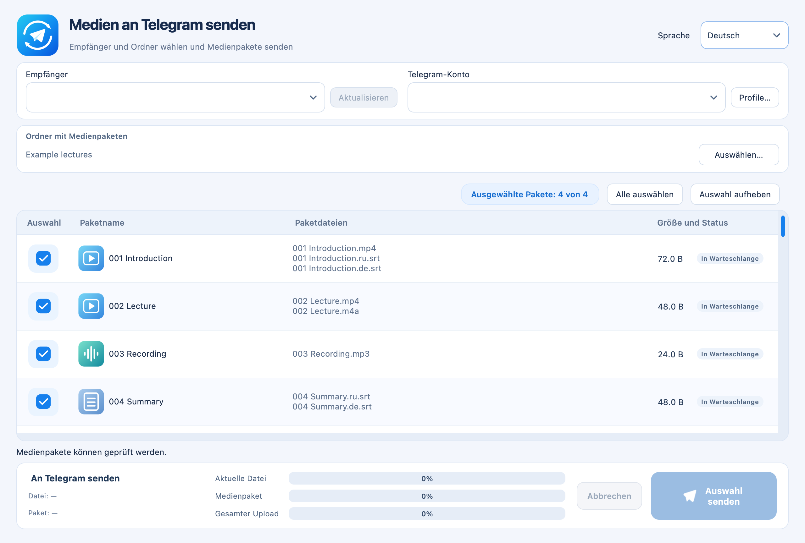

macOS 13+ · Apple Silicon
Telegram Media Sender
Sendet nummerierte Pakete aus Video, Audio und Untertiteln in der gewählten Reihenfolge an Telegram.
Release · 1.1.2Vor dem StartEigenes Telegram-Konto, API ID und API Hash erforderlich; keine Apple-Notarisierung.


So funktioniert es
- Dateien wählen
- Reihenfolge festlegen
- An Telegram senden
Erste Schritte
ZIP entpacken, Telegram Media Sender.app nach Applications verschieben und die Verbindung nach Anleitung einrichten.